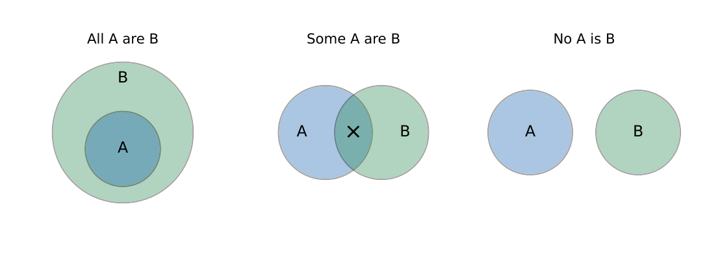

Analytical Reasoning: Deduction, Induction, Analogies and Numerical Reasoning
Valid conclusions from statements (syllogisms), inferring a rule from examples, relationship analogies, number and letter series, odd-one-out, ranking, direction sense and simple arrangements.
9.1 Deduction and induction
Deduction moves from general statements to a conclusion that must be true; induction moves from observed cases to a likely general rule (and may be wrong).
Statement types: “All A are B” (A inside B), “Some A are B” (overlap), “No A is B” (disjoint), “Some A are not B”.
Valid immediate inferences: “No A is B” \(\Rightarrow\) “No B is A”; “All A are B” \(\Rightarrow\) “Some A are B” and “Some B are A”; “Some A are B” \(\Rightarrow\) “Some B are A”.
Chains: “All A are B, all B are C” \(\Rightarrow\) “All A are C”. “All A are B, no B is C” \(\Rightarrow\) “No A is C”. “All A are B, some B are C” \(\Rightarrow\) no definite conclusion about A and C. Two “some” premises, or two negative premises, give nothing.

“All doctors are graduates; no graduate is illiterate.” Then: no doctor is illiterate (valid), no illiterate person is a doctor (valid), some graduates are doctors (valid), all graduates are doctors (not valid).
9.2 Analogies
Find the exact relationship between the first pair and apply it to the second.
| Relationship | Example |
|---|---|
| Worker–workplace | doctor : hospital :: teacher : school |
| Tool–use | pen : write :: knife : cut |
| Part–whole | petal : flower :: page : book |
| Cause–effect | fire : smoke :: rain : flood |
| Degree | warm : hot :: cool : cold |
| Synonym / antonym | big : large :: brave : courageous |
| Product–source | wool : sheep :: milk : cow |
Keep the order of the pair (A:B :: C:D means the same relation from A to B as from C to D).
9.3 Numerical reasoning
9.3.1 Number series
Differences: constant (AP) or the differences themselves form a pattern (second differences constant \(\Rightarrow\) quadratic). Ratios: constant ratio (GP). Alternating rules: two interleaved series. Squares/cubes: \(n^2,\ n^3,\ n^2\pm k\). Products: \(n(n+1)\): \(2,6,12,20,30\). Recursive: \(x_{n+1}=2x_n+1\): \(3,7,15,31,63,127\); Fibonacci \(x_{n+1}=x_n+x_{n-1}\): \(1,1,2,3,5,8,13,21\).
\(2,6,12,20,\underline{?}\): differences \(4,6,8\) so the next difference is \(10\) and the term is \(30\). \(3,7,15,31\): each term is \(2\times\) previous \(+1\), giving \(63\).
Odd one out: find the property shared by all but one (e.g. \(8,27,64,100,125\): all perfect cubes except \(100\)). Letter series: convert letters to positions (\(A=1,\dots,Z=26\)) and test the same patterns. Coding: apply the same letter-shift or substitution rule across words.
9.3.2 Ranking, direction and arrangement
Position from the top \(+\) position from the bottom \(=\) total \(+1\): rank \(7\) from the top among \(40\) is \(34\) from the bottom.
Direction: use coordinates; a \(3\) km north and \(4\) km east walk ends \(\sqrt{3^2+4^2}=5\) km from the start. Left/right turns rotate the facing direction by \(90^\circ\).
Seating: circular arrangement of \(n\) people has \((n-1)!\) orders; if two people must be adjacent, treat them as one block: \(2\times(n-2)!\) arrangements for \(n\) people in a circle.
(i) Reading “Some A are B” as “All A are B”. (ii) A conclusion that holds in one Venn arrangement but not all is invalid. (iii) Reversing an analogy pair. (iv) Testing only differences when the pattern is multiplicative. (v) Mixing up top and bottom ranks (add and subtract \(1\)).
For syllogisms draw the most general diagram and check whether the conclusion survives all variations. For series, write the first differences, then the ratios. For analogies state the relation in one sentence before reading the options. For rank/position use total \(+1\).
9.4 GATE problems
Q1. The next term in \(2,6,12,20,\dots\) is (A) 28 (B) 30 (C) 32 (D) 42.
Q2. All A are B and some B are C. Then (A) all A are C (B) some A are C (C) no definite conclusion about A and C (D) no A is C.
Q3. Doctor : hospital :: teacher : (A) student (B) school (C) book (D) class.
Q4. The odd one out among \(8,27,64,100,125\) is (A) 8 (B) 27 (C) 100 (D) 125.
Answers: Q1 (B). Q2 (C). Q3 (B). Q4 (C): the others are cubes.
Q5. The next term in \(3,7,15,31,63,\dots\) is (A) 95 (B) 117 (C) 127 (D) 125.
Q6. A man walks \(3\) km north and then \(4\) km east. His distance from the start is (A) 5 km (B) 7 km (C) 1 km (D) 12 km.
Q7. A student ranks \(7\)th from the top in a class of \(40\). The rank from the bottom is (A) 32 (B) 33 (C) 34 (D) 35.
Answers: Q5 (C). Q6 (A). Q7 (C): \(40-7+1\).
Q8. The next term of \(1,1,2,3,5,8,13,\dots\) is .
Q9. The sum \(1+3+5+\dots+19\) equals .
Q10. Six people sit around a circular table with \(A\) and \(B\) always adjacent. The number of arrangements is .
Answers: Q8: 21. Q9: \(10^2=100\). Q10: \(2\times4!=48\).
Q11. “All doctors are graduates; no graduate is illiterate.” Which follow? (A) No doctor is illiterate. (B) All graduates are doctors. (C) Some graduates are doctors. (D) No illiterate person is a doctor.
Answers: Q11: (A), (C), (D).
T1. Next term in \(5,10,20,40\)? T2. Pen : write :: knife : ? T3. Is “Some A are C” certain from “All A are B” and “No B is C”?
Answers: T1: 80. T2: cut. T3: no (in fact no A is C).
- Valid: “No A is B \(\Rightarrow\) no B is A”; “All A are B \(\Rightarrow\) some B are A”; “All A are B, some B are C” gives nothing.
- Test series: differences, ratios, alternating terms, squares/cubes, \(n(n+1)\), \(2x+1\), Fibonacci.
- Analogies: name the relation first and keep the pair order.
- Rank \(=\) total \(+1-\) other rank; displacement from perpendicular legs by Pythagoras.